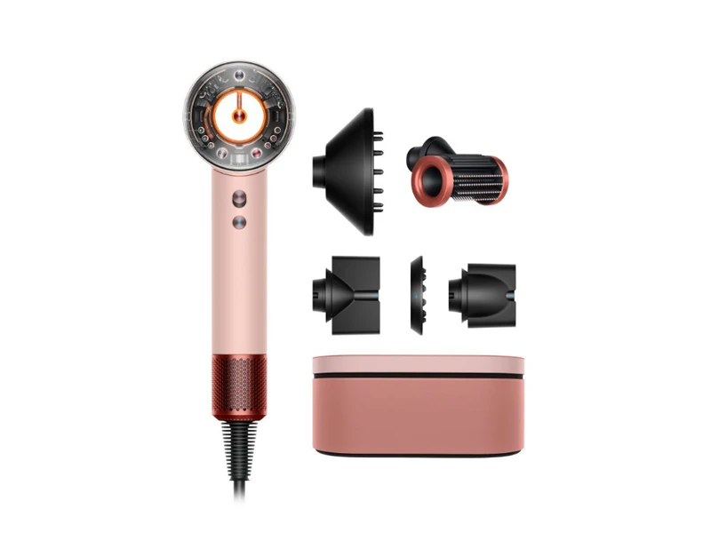
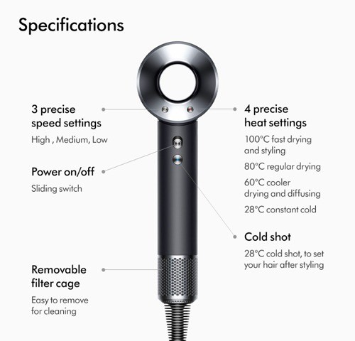

Product Overview
Fast Drying Without Extreme Heat Damage
Dyson Supersonic Hair Dryer mengeringkan rambut lebih cepat dengan perlindungan panas cerdas untuk menjaga kesehatan rambut.
Fast Drying • Heat Control • Hair Technology
Fast Drying Without Extreme Heat Damage
Dyson Supersonic Hair Dryer mengeringkan rambut lebih cepat dengan perlindungan panas cerdas untuk menjaga kesehatan rambut.

Dyson Digital Motor berkecepatan hingga 110.000 rpm menghasilkan aliran udara kuat dengan Air Multiplier™.
Dyson Supersonic membantu mengurangi frizz dan membuat rambut lebih halus serta cepat kering dibanding hair dryer biasa.
— Verified Customer

Udara masuk ke motor digital, dipercepat, lalu dikeluarkan melalui Air Multiplier untuk menghasilkan aliran udara kuat.
Rasakan teknologi pengering rambut modern dengan perlindungan panas pintar.
Learn More →